ColorPhage Mist Family Candidates
这是第六个进阶 family 的候选预览。Mist 用低冲突雾蓝、浅灰绿、淡紫和柔和沙色构成轻盈、长期阅读友好的科研配色，目标是与 soft 拉开层次而不是简单重复。
advanced family: mist
candidate count: 3
n = 8
plots rendered by ggplot2
advanced family / mist
Mist Cloud mist_cloud
云层与浅雾：适合主文统计图、补充材料趋势图和轻量分层图。
#8CA0B3#B3C0C9#D8E0DE#E8E5DE#E0D1C9#C9B7C4#A8B2C7#CFC6D8Fill / bar
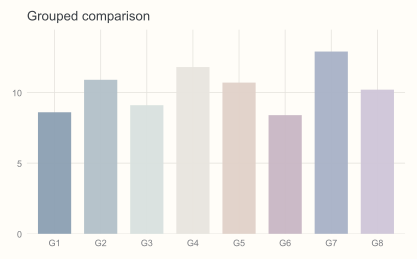
Colour / scatter
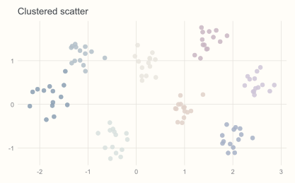
Colour / line
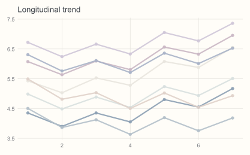
UMAP-like
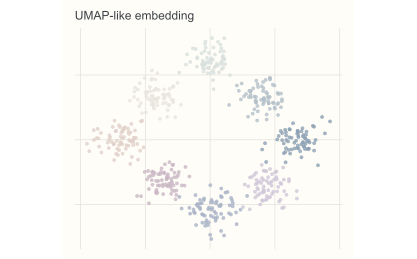
advanced family / mist
Mist Lilac mist_lilac
淡紫与雾蓝：适合多时间点变化图、温和细胞亚群比较和低刺激主文图。
#9EA6C4#C0C6D8#DDE2E8#E9E6E1#D9CFD4#C7B8C8#B6C6D4#E0D7E5Fill / bar
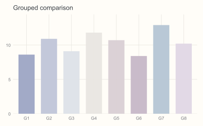
Colour / scatter
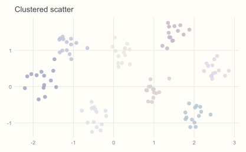
Colour / line
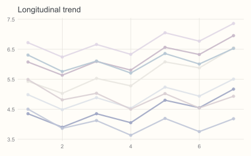
UMAP-like
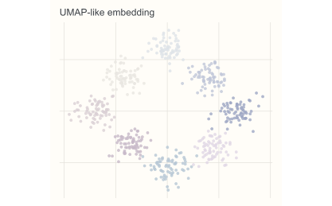
advanced family / mist
Mist Shell mist_shell
贝壳白与雾灰绿：适合机制模块图、综述补充图和长期阅读统计图。
#95A7A0#B9C7C1#DDE3DE#EAE2D7#D8C7BC#C6B6AA#B8C5D1#D9D1DAFill / bar
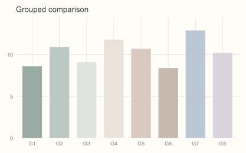
Colour / scatter
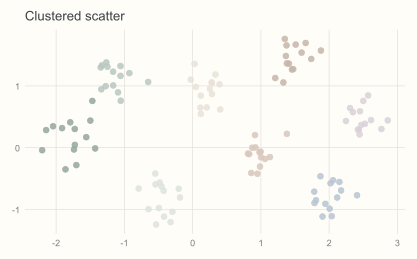
Colour / line
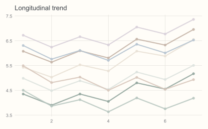
UMAP-like
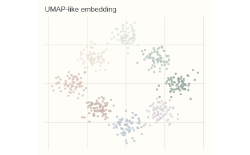